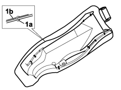

7050D43 TRIM OF REAR SEAT SQUAB PANEL ONE LH OR RH RR WITH SIDE PANEL REMOVED
- Path
- Procedures > 70 FITTINGS > 7050 REAR SEATS > 7050D REAR SEAT TRIM/PADDING > 7050D43 TRIM OF REAR SEAT SQUAB PANEL ONE LH OR RH RR WITH SIDE PANEL REMOVED
- Kind
- repair procedure (removal / refitting; the operation number is the code)
- Applies to
- all engines; all production periods
- Interactive page
- https://sloeber94.github.io/elrnDB-fCrm/en/#/194001165
Applies to: all engines; all production periods
 Removing
Removing
 Refitting
RefittingOp. 5580C60 REAR SEAT SIDE BAG MODULE (ONE), LEFT OR RIGHT - R.R.
1. Remove the retaining seals (1a) using the clippers and separate the cover (1b) from the side panel upholstery.

Applies to: all engines; all production periods
Refitting
Removing- Check that the lining is not damaged.
- Fit the cover on the side panel upholstery and secure it using the special tool with the retaining seals.
Tool | Description | Function | Validity |
|---|---|---|---|
1878017001 | Pliers for metal points | Fitting new backrest cover retaining rings |
Op. 5580C60 REAR SEAT SIDE BAG MODULE (ONE), LEFT OR RIGHT - R.R.